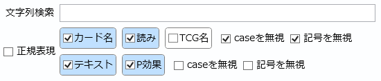

文字列検索の仕様

-
チェックされている項目が文字列検索の対象となります。
- チェックされている項目のうち、どれか一つでも検索が成功すればそのカードはヒットします。
- 一つもチェックされていない場合、文字列検索は行いません(全てのカードがヒットします)。
- ペンデュラムモンスター以外のカードのP効果は何も書かれていないものとして扱います。検索候補から除外はされません。
- パック検索の場合、検索対象はパック名のみです。
-
カードリストのサーチバーに検索ウィンドウのボタン
 が存在しない場合、検索条件は常に画像の設定と同じになります。
が存在しない場合、検索条件は常に画像の設定と同じになります。
- カード名、読み、テキスト、P効果から検索。TCG名は対象外
- カード名と読みについては、caseと記号を無視する。
- テキストとP効果については、caseと記号は無視しない。
- 全角の英数字や一部記号は自動的に半角化されます。
-
「caseを無視」がチェックされている場合、大文字・小文字の違い及び平仮名・カタカナの違いを無視して比較します。
- 例: 検索文字列「デモンス」でcaseを無視する場合、「この効果でモンスターを」のような記述もヒットします。
-
「記号を無視」がチェックされている場合、括弧()や句読点。、を含む全ての記号を取り除いた上で比較します。
- 例: 検索文字列「DD」で記号を無視する場合、「D.D.クロウ」などもヒットします。
- 「caseを無視」と「記号を無視」はカード名とテキストで個別に指定します。
-
「正規表現」がチェックされている場合、テキストボックスへの入力を正規表現文字列として解釈します。
- 例: 検索文字列「ア.ス」で正規表現を使う場合、「アース」「アビス」のような記述がヒットします。
- 入力文字列が正規表現として正しくない場合、テキストボックスの枠が赤くなります。
- 枠が赤い状態で検索を実行した場合、正規表現を使わないとみなして、入力文字列をそのまま検索します。
-
「正規表現」がチェックされていない場合、検索語句はスペースで区切ることで複数指定できます。
-
検索語句を複数指定した場合、デフォルトではいずれか1つ以上が含まれればヒットします。
- 例: ブルー アイズで検索すると《真紅眼の黒竜》(レッドアイズ・ブラックドラゴン)などがヒットします。
-
語句の前に半角の+を付けると必須扱いになります。
- 例: ブルー +アイズで検索すると「ブルー」と「アイズ」を両方含むようなカードがヒットします。
- 例: ブルー レッド +アイズで検索すると「ブルーアイズ」や「レッドアイズ」のようなカードがヒットします。
-
語句の前に半角の-を付けると除外扱いになります。
- 例: ブルー -アイズで検索すると「ブルー」を含むが「アイズ」を含まないカードがヒットします。(例: 《ブルー・ポーション》)
-
検索語句を半角の""で囲むと、その間をスペースを含めて1つの語句として扱います。
- 例: 線 ナで検索すると「線」と「ナ」のいずれかを含むカードが全てヒットします。
- 例: "線 ナ"で検索すると《鉄獣戦線 ナーベル》のみがヒットします。
-
単独で存在する、または語句の途中に存在するエスケープ文字(+ - ")は、その文字そのものとして扱われます。
- これらは「記号を無視」がチェックされている場合は単に無視されることにご注意ください。
-
語句の先頭がエスケープ文字で、その文字自体を語句に含めたい場合、その前に半角の\を付けます。
- 例: -フィで検索すると「フィ」を含まないカードがヒットします。
- 例: 「記号を無視」のチェックを外して\-フィで検索すると《電気海月－フィサリア－》などがヒットします。
- エスケープ文字と組み合わせた時に限り、\は「記号を無視」がチェックされていなくても無視されます。
-
複数指定の際、その出現順は考慮されません。
- 例: ムーン +フォで検索すると、《アルカナフォースⅩⅧ－THE MOON》(アルカナフォースエイティーン－ザ・ムーン)と《月光紅狐》(ムーンライト・クリムゾン・フォックス)の両方がヒットします。
- 出現順まで考慮して複数指定したい場合は正規表現を使ってください。
-
検索語句を複数指定した場合、デフォルトではいずれか1つ以上が含まれればヒットします。